跨域问题是 Web 开发中常见的挑战，源于浏览器的安全策略，限制了页面对不同域名、协议或端口的网络请求。这导致了一系列跨域访问限制，尤其在网页使用 Ajax、WebSocket 等方式与不同域的服务器进行交互时，浏览器会阻止这类请求，以防范潜在的安全风险，如跨站请求伪造（CSRF）攻击。
报错提示如下：
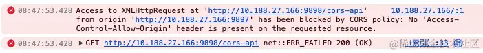
为了克服跨域问题，开发者可以采用各种技术手段，包括 JSONP、CORS（跨域资源共享），以及前端主动设置 document.domain 等方法。尽管这些解决方案在一定程度上解除了跨域限制，确保了不同域之间的数据交互和通信，但它们也引入了一定的开发成本，增加了项目的复杂度。
在开发过程中，有时我们只是为了临时调试功能，不希望部署复杂的跨域解决方案到开发环境。当我们迫切需要一种简单而傻瓜式的跨域解决方案时，能够通过简单配置快速解决问题变得至关重要。
本文将总结一些非常简便的跨域解决方案，让你在开发中轻松应对跨域问题的困扰。
在启动 Chrome 浏览器时，添加 --disable-web-security 参数可用来禁用同源策略。但请注意，这种方式只是在开发和调试时使用，不要在生产环境中禁用同源策略来验收项目。具体操作如下：
Mac 电脑，直接在终端命令行中输入如下指令（<自定义目录> 例如：/Users/xxx/MyChromeData） ：
$ open -n /Applications/Google\ Chrome.app/ --args --disable-web-security --user-data-dir=<自定义目录>
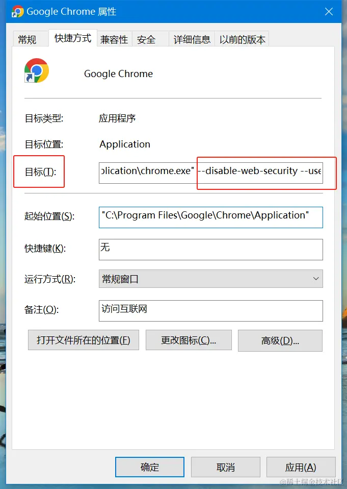
Windows 电脑，右键点击 Chrome 浏览器 -> 属性 -> 目标 -> 在 chrome.exe 路径后面添加代码 --disable-web-security --user-data-dir="<自定义目录>"。(<自定义目录> 例如：D:\MyChromeData)
后续打开该 Chrome 浏览器应用，都是以禁用浏览器同源策略的方式打开。如果设置成功了，打开 Chrome 浏览器会有如下提示：
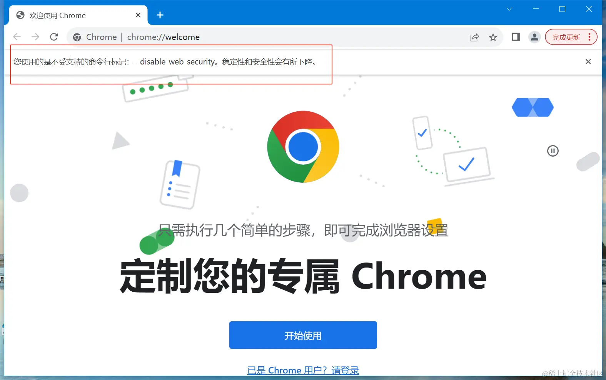
有一些浏览器插件允许在浏览器中启用 CORS 配置，以便在开发过程中更轻松地处理跨域请求，也有一些插件可以帮助临时禁用或修改浏览器的安全设置，以允许跨域请求。以下是一些常见的浏览器插件：
CORS Unblock: 解除跨域限制。Allow-Control-Allow-Origin: 允许跨域资源共享（CORS）。ModHeader: 允许用户修改请求头，可以用于测试不同的 CORS 配置。Postman Interceptor: 结合 Postman 工具使用，拦截请求和响应，方便测试和调试。请注意，使用这些插件时应谨慎，仅在开发和调试环境中使用，切勿在生产环境中禁用浏览器的安全设置。
下面将简单介绍一下 Chrome 插件 CORS Unblock 的使用。
步骤一：在 chrome 应用商店 搜索 CORS Unblock 插件，并点击安装。
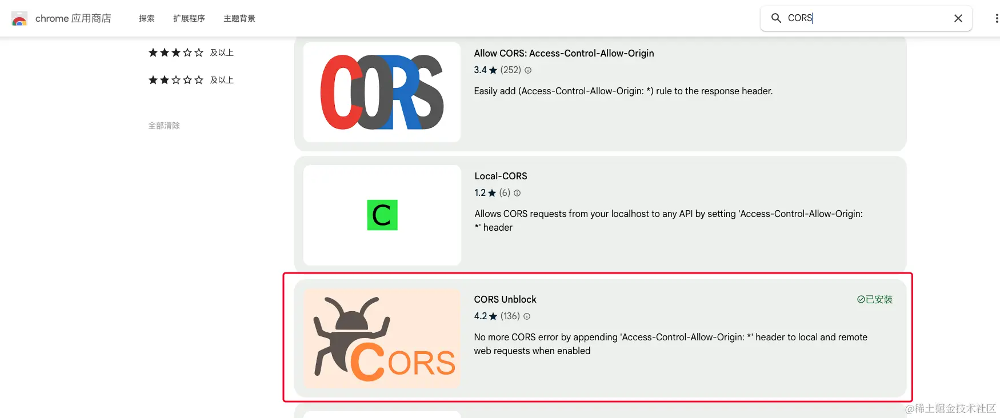
步骤二：固定插件到导航栏，并点击启用 CORS Unblock 插件。
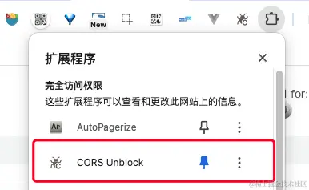
步骤三：刷新网页，会发现原本存在跨域限制的接口都可以正常访问了。
启动插件前：跨域请求失败
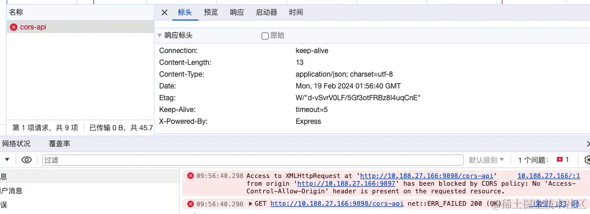
启动插件后：跨域请求被自动添加了 CORS 配置，请求成功
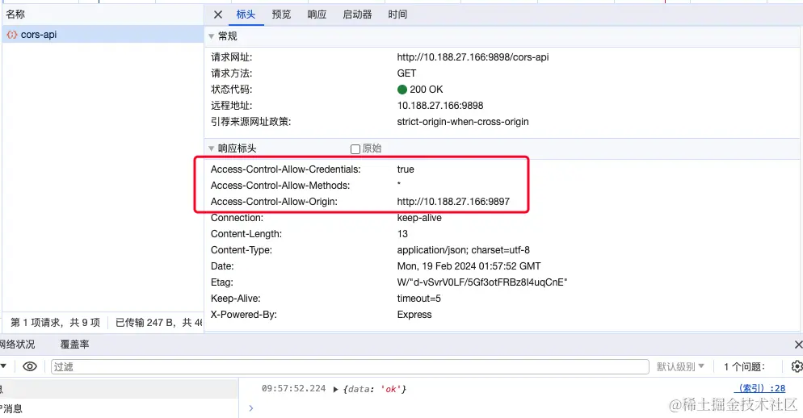
抓包工具是一类用于捕获、分析和修改计算机网络通信流量的软件工具。这些工具允许开发人员和网络管理员监控应用程序的网络交互，查看请求和响应的详细信息，进行性能评估，以及在开发和测试阶段修改数据流以进行调试。抓包工具对于诊断网络问题、优化性能和确保安全性都具有重要作用。常用的抓包工具有 Fiddler、Charles、Wireshark 等。
使用抓包工具代理请求的方式来处理跨域问题，通常涉及将 Web 网络请求通过工具进行中间代理，实现对请求和响应的监控、分析和修改。通过抓包工具的 rewrite 能力重写网络响应，给存在跨域的接口都添加上 CORS 相关配置，来解决跨域问题。
下面将简单介绍 Charles 工具的操作步骤：
步骤一：打开 Charles 工具栏 Tools --> Rewrite
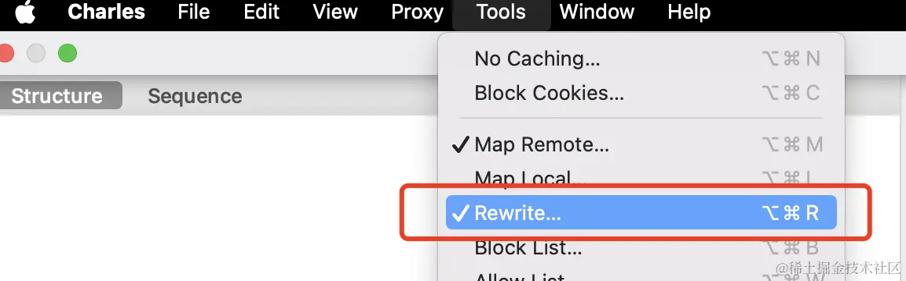
步骤二：添加 Rewrite 配置
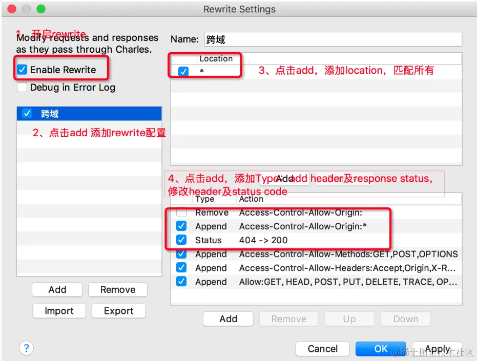
步骤三：Add 时添加 CORS 配置响应头
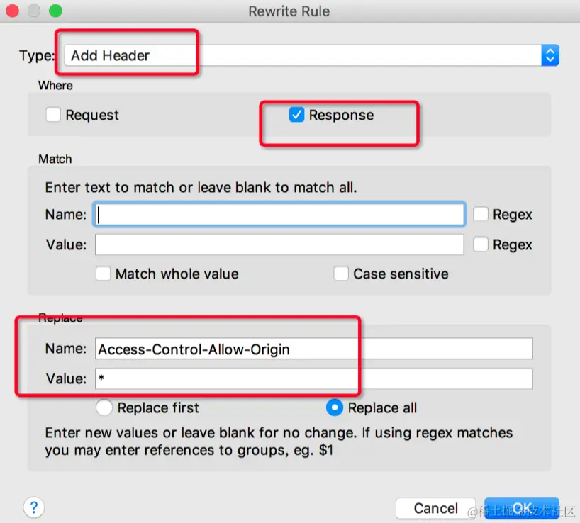
通过完成上述的三个步骤，我们现在就可以直接访问跨域接口了，可以看到所有的接口响应上都已经被添加了 Access-Control-Allow-Origin:* CORS 属性。
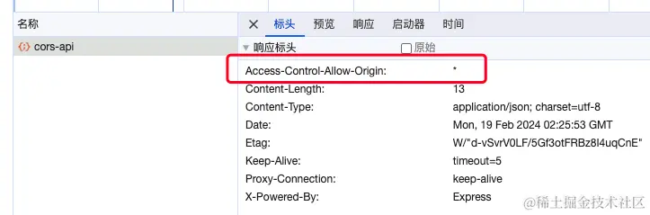
devServer.proxy 是 webpack 开发服务器的一个配置选项，通过该选项配置可以在开发环境中实现跨域请求的代理。它解决跨域问题的原理是将前端的请求转发到后端，然后由后端再代理发送请求到目标服务器，最终将响应返回给前端。
所以，如果我们的项目是通过 webpack 启动服务的或者框架底层正好使用了 http-proxy-middleware 服务的，都可以通过配置 devServer.proxy 直接解决跨域问题。
核心流程如下：
在 webpack 配置文件中的 devServer 部分，通过设置 proxy 选项配置代理。例如：
module.exports = {
// ...
devServer: {
proxy: {
"/api": {
target: "http://localhost:3000", // 如果本地使用的后端服务在 localhost:3000 上，可以使用它来启用代理
changeOrigin: true,
pathRewrite: { "^/api": "" },
},
},
},
};
上述配置表示将以 /api 开头的请求代理到 http://localhost:3000。
启动 webpack 开发服务器
当开发者启动 webpack 开发服务器时，它会监听前端的请求，并根据 devServer.proxy 的配置将符合条件的请求代理到指定的后端服务器。
代理转发
当前端发起以 /api 开头的请求时，webpack 开发服务器将请求转发到指定的后端服务器（例如http://localhost:3000）。
后端处理请求
后端服务器接收到代理过来的请求后，按照正常的处理流程处理请求，并将响应返回。
前端接收响应
最终，webpack 开发服务器将后端服务器的响应返回给前端，完成整个代理过程。
通过使用 devServer.proxy 配置，前端在开发环境中能够绕过同源策略的限制，实现与后端不同域的服务器进行交互，从而解决跨域问题。这样开发者可以在本地开发环境中方便地与后端服务进行协作和调试。
http-proxy-middleware 介绍：
上文所述的 devServer.proxy 代理功能，其底层依赖于 http-proxy-middleware 软件包。所以如果需要设置更多的代理服务配置，可以借鉴参考 http-proxy-middleware 配置文档说明。
http-proxy-middleware 本质上是一个 Node.js 的中间件库，用于在 Express、Koa 或任何基于 Node.js 的 HTTP 服务器上代理 HTTP 请求。
它的工作原理如下：
http-proxy-middleware 可以方便地配置代理规则，支持按路径、按域名、按请求头等进行匹配和过滤，也可以对请求和响应进行修改。通过这种方式，它可以实现反向代理、请求转发、API 接口代理等功能。
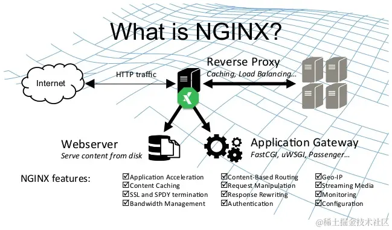
Nginx 配置解决浏览器跨域问题的原理是通过反向代理，将前端应用和后端服务整合在同一域名和端口下。通过在 Nginx 配置文件中设置不同路径的 location 块，将前端请求和后端请求分别代理到对应的服务地址，确保它们具有相同的域名和端口。这样一来，前端页面和后端服务在同一源上，遵循浏览器的同源策略，解决了跨域问题。
在代理过程中，Nginx 还可以添加自定义的请求头信息，确保正确的信息传递和安全性。通过这种方式，Nginx 提供了一种简便有效的解决跨域问题的方法，同时提高了应用的灵活性和安全性。
例如：当前端应用页面部署于 http://10.188.27.166:9897，后端服务接口部署于 http://10.188.27.166:9898，因为两者的端口不一致，所以就会导致跨域请求限制。我们可以通过 nginx.conf 配置，让两者处于同一个域名和端口下，配置如下：
server {
listen 8080; # 端口
server_name localhost; # 域名
# 代理所有前端页面
location / {
proxy_pass http://10.188.27.166:9897;
}
# 代理后端接口
location /cors-api {
proxy_pass http://10.188.27.166:9898;
# 添加了部分自定义属性
add_header Access-Control-Allow-Origin * always;
add_header Access-Control-Allow-Headers *;
add_header Access-Control-Allow-Methods "GET, POST, PUT, OPTIONS";
if ($request_method = 'OPTIONS') {
return 200;
}
}
}
执行 nginx -s reload 命令重新启动 nginx 服务后，我们在浏览器访问 http://localhost:8080/ 地址，跨域限制问题就已经被成功解决了，如下：
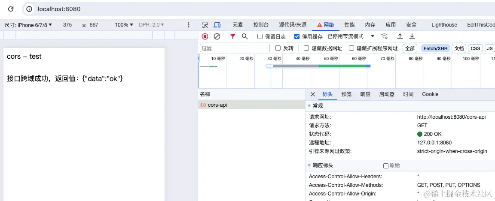